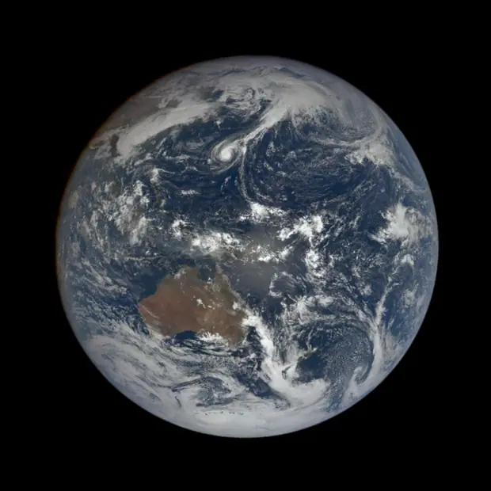

Into the Cosmos with Gemini
Ten things an agent needs before it can answer one question.
Aayush Arora · FilterPixel
The whole talk is one question
“Is it worth going outside tonight?”
By the end, it answers this on its own — every morning, before you wake up.
Ask it cold
It cannot know. Not won't — cannot.
Where you are
You never told it. It has no location, no IP, no guess worth making.
Tonight's weather
A measurement that did not exist when it was trained. No amount of reading fixes this.
Tonight's sky
Saturn is somewhere specific, at a specific height, right now. That is arithmetic, not knowledge.
A model with no senses and no memory. Everything from here is giving it both.
Ten things an agent needs before it can answer one question.
1 A tool it can see
2 A loop you own
3 A sense of the weather
4 Eyes
5 A sense of when
6 A memory
7 The judgement to chain
8 The restraint to stay quiet
9 Tools it did not write
10 A way to know it was right
We add them one at a time. When the tenth is in, the question answers itself.
This is what we are building
The blue half is fifteen lines. The orange box is the rest of the talk.
Everything that goes wrong tonight goes wrong in the orange box. Never in the loop.
What every tutorial gets wrong
You own the loop
| What you’ll find online | What the docs say now |
|---|---|
| client.models.generate_content | client.interactions.create |
| Pass Python functions | Pass declaration dicts |
| The SDK calls them for you | It does not. You do. |
“The model doesn’t execute the function itself. Extract the name and args and execute in your application.”
Nobody retries. Nobody stops it. So your agent is only as good as your tools.
1 of 10 · A Tool It Can See
The model never sees your code
{
"name": "sky_conditions",
"description": "How cloudy will it be
tonight at this place, hour by hour.
0 is clear; above about 40 there is
no point going outside.",
"parameters": {"lat", "lon"}
}
A name, a sentence, some parameters. That is the whole interface.
Not your function body. Not your types. Not your intentions.
A function called process() described as "processes data" is invisible to an agent.
2 of 10 · A Loop You Own
Four moves. That is the whole agent.
1 interaction = client.interactions.create(
model="gemini-3.8-flash",
input="Is it worth going outside tonight?",
tools=my_four_tools)
2 for step in interaction.steps:
if step.type == "function_call":
3 result = sky_conditions(**step.arguments)
4 client.interactions.create(
input=[{"type": "function_result",
"call_id": step.id,
"result": [...]}],
previous_interaction_id=interaction.id)
1
Ask. Question in, tools attached.
2
Look. Did it ask for a tool?
3
Run it yourself. Gemini never does.
4
Hand it back. Then loop.
Line 3 is the one everyone gets wrong. You call the function — Gemini never does.
3 of 10 · A Sense Of The Weather
Will it be clear?
"https://api.open-meteo.com/v1/forecast"
?latitude=26.73&longitude=88.40
&hourly=cloud_cover
Three lines. The first of the agent's senses.
3 of 10 · A Sense Of The Weather
An endpoint is not a tool. You are the filter.
1
NASA sends everything
1,285 bytes · 48 hourly readings · two days you did not ask for
2
Your function keeps six
tonight only · 18:00 to 23:00 · plus an average it can act on
3
The docstring explains it
“0 is clear; above about 40 there is no point going outside”
4
The model sees this
{"evening": {"20:00": 3, …}, "average_cloud_pct": 3}
1,285 bytes in. 133 bytes out. Ten times smaller, and every number is one it can use.
Every tool in this talk is these same four steps. Nothing else.
3 of 10 · A Sense Of The Weather
Tonight, over your heads

3% cloud, all evening. The gap sits right over us. open-meteo · real forecast
Next · 4 of 10 · Eyes
It knows the sky is clear.
It has no idea what is in it.
A weather forecast cannot tell you Saturn is up.
4 of 10 · Eyes
What is up there tonight?
"https://ssd.jpl.nasa.gov/api/horizons.api"
?COMMAND='699' # Saturn
&SITE_COORD='88.40,26.73,0' # Siliguri
&QUANTITIES='4,9' # how high, how bright
JPL will compute the sky from any point on Earth. No key.
4 of 10 · Eyes
Tonight, over Siliguri

Saturn, 64° up at 21:00. The Moon stays down until 03:00. JPL Horizons · real positions
Next · 5 of 10 · A Sense Of When
It can point at Saturn.
It does not know the Moon will drown it.
Clear is not the same as dark.
5 of 10 · A Sense Of When
What will wash it out?
def moon_tonight(lat, lon):
"""When the Moon comes up, and how bright.
If it rises late, the early night is the
good part."""
Same endpoint as the planets. Different body code.
5 of 10 · A Sense Of When
The Moon is not invited until three

Ten hours of properly dark sky, starting now.
And only 15% lit when it does arrive.
JPL Horizons · body 301 · Siliguri, 5 Nov 2026
Next · 6 of 10 · A Memory
Every night, it asks where you live.
And what you own. And what you have seen.
Answer the same three questions forever.
6 of 10 · A Memory
It should not ask twice
def recall() -> dict:
"""Call this FIRST, before asking the user anything.
If it already has their location, do not ask again."""
previous_interaction_id carries the conversation.
A file carries what outlives it.
6 of 10 · A Memory
Three places state can live. Pick on purpose.
The model
nothing
It remembers nothing between calls. Not your last question, not who you are.
This conversation
previous_interaction_id
Google holds the thread. Gone when tonight is over.
Across nights
a file. a row. yours.
Where you live, what you own, what you have already seen.
The mistake is using the first two for the third. A conversation id will not remember you next week, and nobody notices until a user comes back.
Mine is a JSON file with three keys in it. That is enough to stop asking.
6 of 10 · A Memory
It knows nothing, so it asks
↳ recall()
{"known": "nothing yet — this is the first night"}
↳ remember(key='location', …)
↳ remember(key='equipment', …)
“Where are you, and what have you got?”
Asking once is fine. Asking every night is not.
So it writes the answers down.
6 of 10 · A Memory
No questions at all
↳ recall()
{
"location": "Siliguri",
"equipment": "10x50 binoculars",
"seen": "Saturn, 5 Nov"
}
“Clear again. You had Saturn last week — try Jupiter, it clears the rooftops by eleven.”
It does not just stop asking. It stops recommending Saturn.
Without this, every night starts from zero. That is not an assistant, it is a form.
Next · 7 of 10 · The Judgement To Chain
Four tools. Four answers.
Nobody decided anything.
Calling everything in a fixed order is a script, not an agent.
7 of 10 · The Judgement To Chain
This is the part that is an agent
recall()
location: Siliguri
→ never asks where you are
sky_conditions()
3% → 1% by 23:00
→ clear, so there is a point continuing
moon_tonight()
rises 03:00
→ the whole evening is dark. No hurry
planets_tonight()
Saturn 64° at 21:00
→ that is the thing to look at
Not one of these is in a fixed script. The order comes out of the answers.
Next · 8 of 10 · The Restraint To Stay Quiet
It tells you everything it found.
Including the nothing.
A good answer leaves things out.
8 of 10 · The Restraint To Stay Quiet
space_weather()
Kp 0.67
→ say nothing about it
Knowing when to leave something out is also a decision
A tool that comes back “no” is not a wasted call. It is the reason the answer is short.
Next · 9 of 10 · Tools It Did Not Write
You will not write every tool.
Somebody already built the one you need.
Four functions got us here. The fifth belongs to someone else.
9 of 10 · Tools It Did Not Write
Somebody else's tools, plugged in
McpServer(
name="observatory",
streamable_http_transport=
StreamableHttpTransport(url=...))
Remote only. There is no local transport in the type.
Streamable HTTP. A url and headers. That is the whole surface.
Not supported in Vertex AI. Verbatim from the SDK.
Four tools you wrote, any number you did not. The loop does not change.
Next · 10 of 10 · A Way To Know It Was Right
It sounds right.
Is it?
Fluent and wrong is the default failure mode.
10 of 10 · A Way To Know It Was Right
The check, after the fix
$ python demo/tonight.py --tools-only
✓ {"evening": {"20:00": 3, "23:00": 1}, "average_cloud_pct": 3}
✓ {"planet": "Saturn", "highest_altitude_deg": 64.2, "at_local_time": "21:00"}
✓ {"above_horizon_tonight": true, "rises_local": "03:00"}
✓ {"kp_index": 0.67, "aurora_possible": false}
4/4 tools working
Every number on the answer slide came out of these four lines. None of it was in the model.
The question, answered
Yes. Go outside.
3%
cloud, all evening
64°
Saturn, at 21:00
Kp 0.7
quiet — no aurora
03:00
before the Moon rises
Four tools. One loop. Nothing here was in the model.
Second half
Everything you just watched
broke at least once
Not the model. Not the loop. The four functions.
Six of them, in the order they happened to me — and every one is a bug with a diff.
All six happened to me building this talk
Six ways your tools break
| # | What goes wrong | What fixes it |
|---|---|---|
| 1 | It calls your tool wrong, over and over | The docstring is the API |
| 2 | One bad lookup kills the run | Return a result, not an exception |
| 3 | It gets stuck after an error | Write the error for the model |
| 4 | Your tool takes ten minutes | Move the slow part off the loop |
| 5 | The upstream API is flaky | Retry inside the tool |
| 6 | You can’t tell if it worked | Score it against ground truth |
The first three are craft. The last three are infrastructure — and that’s where the cloud comes in.
Lesson 1
Ask for Mars, get a spacecraft
COMMAND='Mars'
Multiple major-bodies match:
4 Mars Barycenter
499 Mars
-3 Mars Orbiter Mission
-41 Mars Express
No ephemeris. No error either.
body: {"description":
"JPL code, not the name.
499 Mars, 699 Saturn."}
→ 79° altitude, magnitude 0.78
One sentence of English. First try.
Your schema, your service names, your table called accounts that everyone calls customers. The description is the only place that can live.
Lesson 2
Empty is an answer
if not visible:
raise ValueError("nothing up")
The run dies. No answer about the clouds, the Moon or the aurora either.
return {"visible": [],
"note": "nothing up tonight"}
“No planets — but it is dark and clear. Look for the Milky Way instead.”
An exception ends the conversation. A result continues it.
Lesson 3 · this one really happened
Write the error for the model
space_weather: AttributeError: 'dict' object has no attribute 'index'
My bug, first run. NOAA returns a list of dicts, not rows. The model cannot do anything with that sentence.
return {"error": "space weather unavailable",
"can_continue": True}
Now it answers with three tools and says so. Your error messages are prompts now.
Three things that will cost you an hour
On your first attempt
call_id == step.id
Answer the exact step that asked. Get it wrong and the model never sees your result.
"result": [ … ]
A list of content blocks, not a string. This one surprises everybody.
response_format
Not response_schema. Every older example online says the wrong one.
None of these throw a useful error. They just quietly do nothing.
Lesson 4 · measured
A slow tool cannot live in the loop
sky_conditions 1.12s
planets_tonight 4.31s
moon_tonight 1.08s
space_weather 0.48s
total 6.99s
Why 4.31s? It calls Horizons once per planet. Four round trips, one after another.
Fan them out at once, or compute the whole night before anyone asks.
Seven seconds of tools, several rounds deep, is a person watching a blank screen.
Lesson 5
Retry inside the tool
for n in range(3):
try: return urlopen(req, timeout=60).read()
except Exception: time.sleep(1.5 * (n + 1))
JPL and NOAA both drop requests that work a second later.
So does the model. gemini-3.8-flash gave me 503, repeatedly, building this talk.
Never make a language model reason about HTTP. It will apologise instead of trying again.
Lesson 6 · the one that matters
I thought all four tools worked
✓ sky_conditions
✓ planets_tonight
✓ moon_tonight
✗ space_weather
3/4 tools working
First run, today. I would have sworn it was four.
Nothing crashed. The agent would simply have stopped mentioning the aurora.
One command, no API key, four seconds:
tonight.py --tools-only
An agent degrades quietly. If you are not counting, you are guessing.
Lesson 4, as a picture
Move the slow part off the loop
The sky over Siliguri is the same for everyone in Siliguri. Compute it once, not once per question.
Lesson 6, as one query
Was it right?
SELECT
COUNT(*) AS nights,
SUM(said_go) AS told_them_to_go,
SAFE_DIVIDE(
SUM(said_go AND was_clear),
SUM(said_go)) AS right_when_it_said_yes
FROM nights;
The truth arrives for free. Tomorrow, open-meteo publishes what the sky actually did.
Send somebody out under cloud twice and they stop trusting you.
Your tickets, your PRs, last quarter's forecasts. The past is already labelled.
The output · recorded from the live map
Now watch those eight lines run
2,350 km across, down to 267 km. Every pixel is Viking orbiter imagery.
Olympus Mons is three times the height of Everest and as wide as France.
The dark pits at the end are the summit caldera — where the roof fell in.
Recorded, so it cannot fail. worlds.html is tab 1 if you want to fly it yourself.
Nobody at NASA built this for you. They published the tiles and went home.
NASA/JPL · USGS Astrogeology · Mars Viking MDIM21 colour mosaic, 232 m/pixel · trek.nasa.gov, keyless
The output · 13 real photographs · 1 November 2026
One day of Earth, from a million miles away

Not a render. Not a composite of old imagery. Thirteen photographs taken on one day, in the order they were taken.
00:59 UTC to 22:36 UTC. 324° of rotation — very nearly a whole turn.
Every cloud you can see was where it was that day. Yours will be different, and it is one GET away.
Six lines of code and a spacecraft somebody else paid for. That is the whole trick.
NASA/NOAA DSCOVR EPIC · natural colour · 13 frames cross-faded · epic.gsfc.nasa.gov, keyless
One query · no key · every world we know
Watch the sky fill up
The whole tool
select pl_name, disc_year,
pl_orbper, pl_rade
from pscomppars
where disc_year is not null
One HTTPS GET to the NASA Exoplanet Archive. 6,451 rows, 445 KB, no key.
Hand that to Gemini as one tool and it can answer almost anything about planets.
The blue burst is Kepler, 2009–2016. Earth sits almost alone — not because small planets are rare, but because they are faint.
6,050 of the 6,451 confirmed planets have both a measured size and period — those are the dots. Fetched 5 Nov 2026 · demo/data/planets.json
Take a photo of this one
Six rules for agent tools
Not one of these is about Gemini. Swap the model next year and all six still hold.
Go and build one of these
TONIGHT · 10 MIN
“Will I see an aurora from my city this week?”
One sentence. It already has the space-weather tool.
THIS WEEKEND
A live page of everything passing closer than the Moon
Refreshes itself each morning. Send the link to one friend.
THE ACTUAL POINT
Throw away the telescope. Plug in something of yours.
Your tickets, your repo, your database. Same six rules.
Nothing tonight was about astronomy. It was about handing a model a tool and asking in plain English.
Go and point it at something
pip install google-genai
export GEMINI_API_KEY="…"
Free key at aistudio.google.com · the free tier runs gemini-3.8-flash
All of it is in the repo — the code, the slides, and every failure. Plus a facts file with the query behind every number I quoted.
[ QR code: repo ]
Aayush Arora · data from NASA Exoplanet Archive, Kepler, MAST, JPL and the NASA Image Library